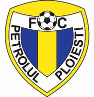
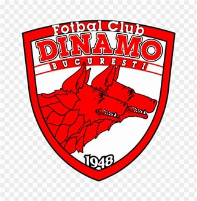

Meciuri si rezultate
| 4 August 2024 | CFR Cluj | 2-3 | FC Universitatea Cluj | ||
| 12 August 2024 |  | Petrolul Ploiesti | 0-0 | FC Universitatea Cluj | |
| 17 August 2024 | FC Universitatea Cluj | 3-0 | Sepsi OSK | ||
| 26 August 2024 | Gloria Buzau | 0-2 | FC Universitatea Cluj | ||
| 29 August 2024 | Metalul Buzau | 1-0 | FC Universitatea Cluj | ||
| 1 Septembrie 2024 | FC Universitatea Cluj | 1-0 | Dinamo Bucuresti |  | |
| 14 Septembrie 2024 | FC Rapid | - | FC Universitatea Cluj | ||
| 21 Septembrie 2024 | FC Universitatea Cluj | - | Universitatea Craiova |